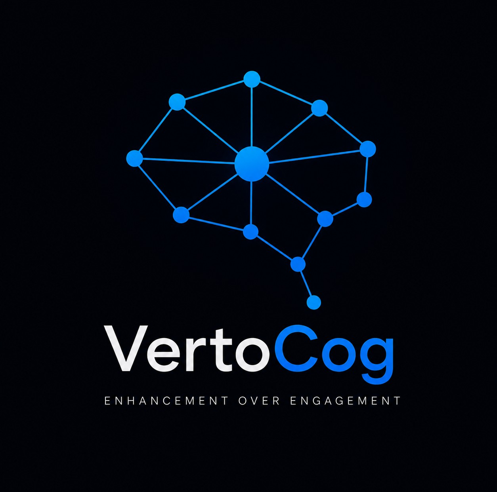

Enhancement Over Engagement
Our guiding principle is cognitive fidelity: preserving and strengthening our ability to think, remember, communicate, and make decisions while using intelligent tools.
Technology should clarify rather than manipulate, augment rather than replace, and support human judgment rather than compete with it.
VertoCog is currently under development